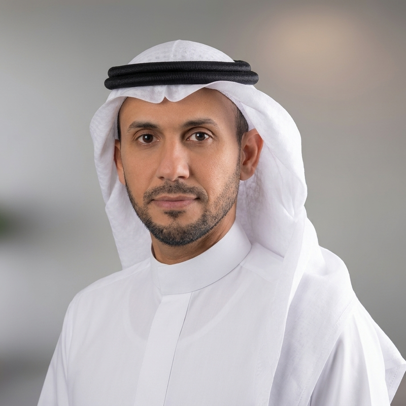

بناء القدرات الوطنية في البيانات والذكاء الاصطناعي
قيادة أكاديمية سدايا وتطوير منظومة البرامج المتقدمة والمعسكرات والشهادات المهنية والشراكات، بما يخدم الاحتياجات الوطنية وأولويات رؤية السعودية 2030.
المدير العام لأكاديمية سدايا أستاذ هندسة البرمجيات · ممارس معتمد في إدارة التغيير من Prosci®
أعمل على تحويل الطموحات الوطنية في البيانات والذكاء الاصطناعي إلى قدرات مؤسسية وبشرية مستدامة، عبر قيادة البرامج الوطنية، وتطوير حوكمة التقنية، وربط البحث العلمي بالتطبيق العملي.

من الاستراتيجية إلى التنفيذ، ومن المعرفة إلى الممارسة.
قيادة أكاديمية سدايا وتطوير منظومة البرامج المتقدمة والمعسكرات والشهادات المهنية والشراكات، بما يخدم الاحتياجات الوطنية وأولويات رؤية السعودية 2030.
تطوير الحوكمة المؤسسية وهندسة المؤسسات وإدارة المشاريع ودورة حياة البرمجيات، وتعزيز جودة التنفيذ عبر الممارسات الهندسية والتحسين المستمر.
أبحاث في الذكاء الاصطناعي وهندسة البرمجيات وأمن الأنظمة والتحول الرقمي، مع تركيز حديث على الأنظمة الوكيلة وهندسة البرمجيات المدعومة بالذكاء الاصطناعي.
الإشراف على الاستراتيجية والمحفظة التدريبية والشهادات المهنية وأطر الجودة والتقييم وقياس الأثر.
رئاسة فريق بناء القدرات والشراكات، ونيابة رئاسة فريق حوكمة الذكاء الاصطناعي ضمن اللجنة العربية المعنية بالذكاء الاصطناعي.
قيادة أكاديمية الذكاء الاصطناعي، وتطوير حوكمة المشاريع وهندسة المؤسسات وممارسات تطوير وتسليم البرمجيات.
المساهمة في تأسيس الرؤية الأكاديمية والهيكل التنظيمي والبرامج الأولية للكلية.
تطوير منظومة إدارة الجودة ودعم الاعتمادات الأكاديمية وشهادات الأيزو على مستوى الجامعة.
قيادة تنفيذ نظام تخطيط الموارد المؤسسية، والمساهمة في تصميم برامج وتخصصات في هندسة البرمجيات والأمن السيبراني.
الملف المهني الكامل والأبحاث العلمية متاحة على الموقع باللغة الإنجليزية، والسيرة الذاتية متاحة بالعربية.